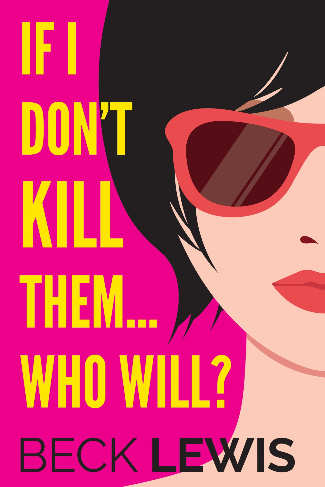
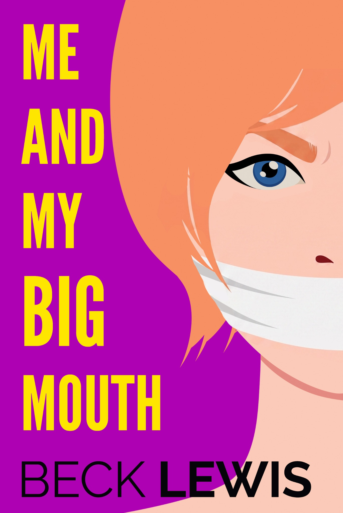

You’ve survived terrible meetings, awkward social expectations, manipulative men and people who say “let’s circle back” without irony.
Answer a few deeply scientific questions and we’ll reveal which darkly funny thriller title matches your energy.
At the end, you’ll be invited to join the Beck Lewis reader list and get the free short story Me and My Big Mouth. No surprise signup. No nonsense.


Your result
I only meant to eavesdrop. Then the worst first date I’d ever seen turned into something much darker.
Join the Beck Lewis reader list and we’ll send you the free story link. You’ll also be taken straight to BookFunnel to download it now.